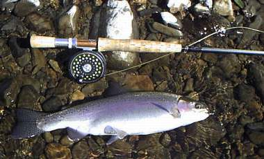

私のお気に入り
釣り道具 Hardy Ultralite Disc #６
1996年の秋、翌年に計画していたニュージーランド釣行に際して、ドラグ性能の優れたリールが必要になり、瀬戸市のイナガキにて購入したハーディのウルトラライトディスク。以後、97年、98年、99年のニュージーランド釣行、そして2000年3月からのワイカト周辺の釣行にて酷使しているが、一度も故障が無く、期待通りの性能を発揮してくれている。

当時、ディスクブレーキシステムというのが出始めた当初だったような気がするが、目新しいディスクドラグと、黒く美しいシンプルなフォルムが気に入って買った。買った当初は気が付かなかったが、艶消しの黒という色は、南島の山岳渓流のブラウントラウトや、ワイカトのスプリングクリークでレインボーをサイトフィッシングで狙う際に、反射が少ないので大いに助かった（と思いたい）。
肝心のディスクドラグは、微・弱・中・強という４段階の調整であり、どの段階でもスムーズな滑り出しと安定した制動力を発揮してくれる。ドラグ調整つまみが大きいのも操作しやすい。さらに、水に濡れた状態でもドラグ性能に変わりがないのがありがたい。ただ、ドラグの調整が段階的なので、鱒がラインを引き出している最中に強い方に調整すると、ガクンとショックが発生し、ティペットが切れたり、フックが外れたことがあった。
現在は、ワイカトのおちゃっぴいなレインボーからトンガリロの60cmオーバーまで、主として「中」の段階にセットして釣っている。重量が軽いので、一日ロッドを振っても疲れないし、４番ロッドと組み合わせるという想定外の使い方をしても、それほど違和感なく使える。また控えめなクリック音も嬉しいポイントである。
ほとんど難点の無いリールだが、やや塗装が剥げやすいのが気になると言えば気になる。この点は、アメリカのアウトドア用品のユーザー投稿型批評ページである、 http://www.outdoorreview.com/ の投稿欄でも指摘されていた。価格が高い（高過ぎる）と言う意見もあったなぁ。
「リールを買うときには、スペアスプールを２ヶ買っておくと便利である」
ということを、はるか昔、雑誌「アウトドア」の創刊準備号で芦澤一洋さんが書いておられましたが、その通りだと思う。私の場合、お金が無くて替スプールは１ヶしか買えなかったけれど。（泣） 現在、一つのスプールには４番ラインを、別のスプールには６番ラインをそれぞれ巻いて使っている。近所の小渓流から海でのカウワイ釣りまで、これ一つでカバーできるのはとても便利である。
このモデルが出た当初に購入したので、初期限定のシリアルナンバー：144という数字がドラグ調整つまみに刻印されている。私の誕生日が14日なので、これは縁起が良いと思って購入したこと、あるいは、南島西海岸をガイドしてもらったブリント・トローレさんも同じリールを使っていたので嬉しくなったことなどを思い出す。
こうやって書いていると、リールとかロッドというものは、そのもの本来の性能に加え、ちょっとした思い入れの積み重ねがあるかどうかが、その人にとっての価値を左右するのではないかと思う。（笑）
釣り具はみんな、そうなのかも........
私のお気に入り 目次へ
サイトマップ
ホームへ
お問い合わせ